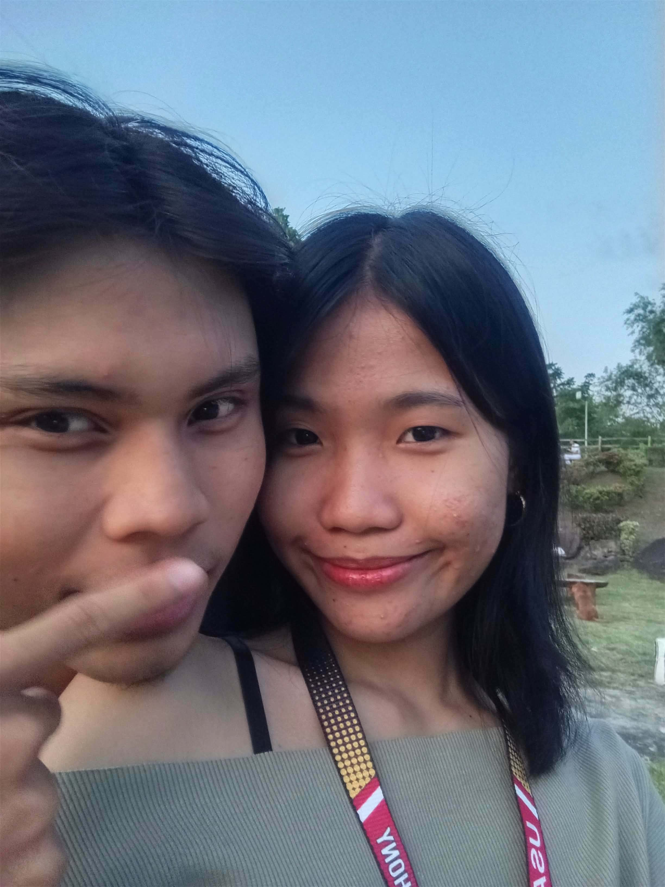
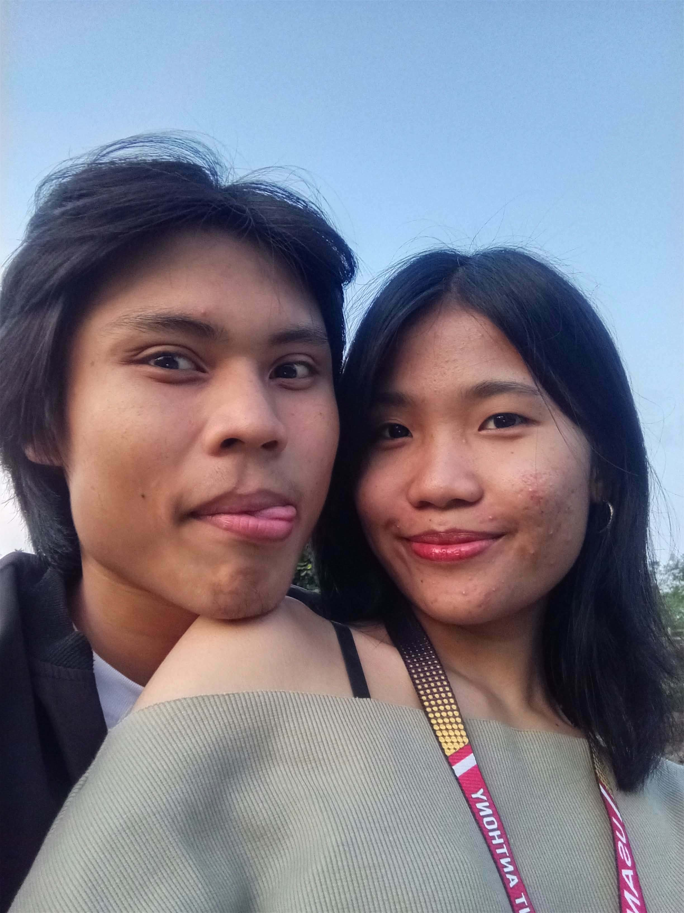

Hiii loveee ko,
Happy 19th Monthsaryyyyy pooo, loveee loveeeee! ❤️🥹 ...


cuteee natin dito, loveee! 🥹💛
Happy motmot babyy kooooo! ❤️🥹 19 months na tayo, loveee! Grabe, ang bilis talaga ng panahon. Parang kailan lang yung mga unang months natin, and now we’re already here, celebrating another month together. Through all these months, I’ve realized how lucky and grateful I am to have you in my life. Every memoryyy, every laugh, every random kwentuhan, and evenn our little tampuhan are moments that I’ll always treasure. 💗
Lovee, thank you for loving me even on the days when I’m not the easiest person to understand. Thank you for your patience, your effort, and for still choosing to stay kahit may mga times na nagkakainisan or hindi tayo nagkakaintindihan. I know we’re not perfect, but I love that we’re learning and growing together babyyy. Everyy problem we overcome makes me appreciate what we have even more.
I hope you know how special youuuuu are to me, baby. You’re not just someone I love—you’re someone I’ve become so comfortable sharing my life with. You’re one of the people I want to tell my random stories to, laugh with, make memories with, and even annoy youuuu for the rest of my life hehehehe. 🥹❤️
I hopeee habang tumatagal tayo, hindi mawala yung sweetness, kulit, lambing, and love natin sa isa't isa. Sana kahit marami pa tayong pagdaanan, lagi nating maalala kung bakit natin pinili ang isa't isa. And whenever things get hard, sana hindi tayo agad susuko. Let's keep talking, understanding, forgiving, and choosing each other, opoooooooo.
Please takeeee care of yourself palagi, opoooo. Kumain sa tamang oras, magpahinga kapag pagod po, and please don't forget babyy that you also deserve to take care of yourself. I want to see you happyyyyy, healthy, and achieving the things you dream about. And whenever you need someone to support you, I hope you know that I'll always be here cheering for youuuu. 💛🫶🏻
I’m really thankful na ikaw yung kasama ko hanggang ngayonnn. Thankyouuuuu for all the memories we've made in these 19 months, and I’m excited for all the memories we haven’t made yet. I want more dates yeahhh yeahhhh hahahaa, more late-night talks, moreeeee random conversations, more laughs, more pictures, more adventures, and even more simpleeee moments where it’s just usss. 🌻❤️
I know I’m not a perfect boyfriend, and sometimes I make mistakes or fail to express what I feel properly pero ihhhh. But one thing I can promise babyyy is that I’ll continue trying. I’ll keep learning how to loveeeee you better, understand you deeper, and make you feel how important you are to me (ako na 'to ohh').
Happy 19th Monthsaryyyyy ulittt, Bebuuuuu! ❤️🥹 Thank you for being one of the most beautiful parts of my lifeeeeeee. 19 months na tayooooo dumpling kooooo, pero I still want more—more months, more years, more memories, and more “tayooooo.” I hope whatever happens, we’ll continue holding on to each other and making our loveeee stronger.
I love youuuuuuuuuuu soooo soooooo muchhhh, loveee! Moreeee than I can put intoooo wordsssss. 💛🌻🫶🏻✨